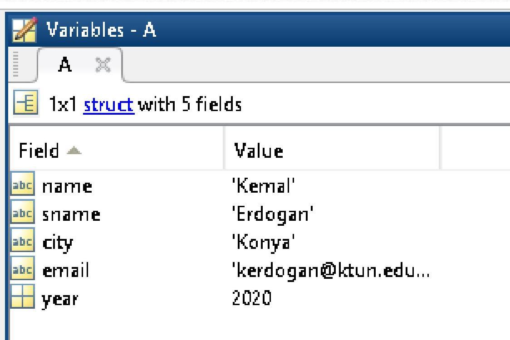

Bu ders notu, MATLAB programlama ortamında veri girişi ve çıktısı, dizi (array) ve vektör oluşturma, aritmetik işlemler ve kontrol yapıları gibi temel konuları kapsamaktadır. Kullanıcıdan klavye aracılığıyla veri almayı (input komutu), alınan veya işlenen veriyi ekrana yazdırmayı (fprintf, disp komutları) ve bu veriler üzerinde temel manipülasyonları gerçekleştirmeyi öğrenmeyi hedefler. Ayrıca, MATLAB’in temel veri yapılarından olan vektörler, sayı dizileri, hücre dizileri ve yapı dizilerinin tanımlanması, kullanılması ve üzerinde yapılabilecek yaygın işlemler detaylandırılmıştır. if-end, switch-case, for-end ve while-end gibi algoritmik kontrol yapıları da örneklerle açıklanarak, programlama yeteneğini pekiştirmeyi amaçlamaktadır.
Temel Terimler ve Kavramlar
input Komutu: Kullanıcıdan klavye aracılığıyla veri almak için kullanılan MATLAB komutudur.
fprintf Komutu: Hem metin hem de sayısal veriyi formatlı bir şekilde ekrana yazdırmak için kullanılan bir MATLAB komutudur.
disp Komutu: Genellikle sayısal değerleri veya basit metinleri ekrana yazdırmak için kullanılan, çıktıdan sonra otomatik olarak yeni satıra geçen bir MATLAB komutudur.
Vektör: MATLAB’de tek boyutlu, ardışık sayı dizisi olarak tanımlanan bir veri yapısıdır. Satır veya sütun vektörü olabilir.
Dizi (Array): Sayısal veya metinsel değerler topluluğunu ifade eden genel bir matematiksel tanımdır; MATLAB’de temel veri elemanı olup, her şey bir dizi olarak işlenir.
Hücre Dizisi (Cell Array): Farklı türlerdeki ve boyutlardaki verileri (sayılar, metinler, matrisler vb.) aynı dizi içinde saklamaya yarayan MATLAB veri yapısıdır.
Yapı Dizisi (Struct Array): Farklı veri alanlarını (isim, şehir, yıl gibi) bir araya getiren ve bu alanlara etiketlerle erişim sağlayan bir MATLAB veri yapısıdır.
Kontrol Yapıları: Programın akışını (örneğin koşullu dallanma veya döngüsel işlemler) kontrol eden if-end, switch-case, for-end, while-end gibi programlama öğeleridir.
Ana Gövde: Kronolojik veya Tematik Kayıt
MATLAB’e Klavyeden Veri Aktarımı
MATLAB programları çalışırken kullanıcıdan veri almak için input komutu kullanılır. Bu komut, kullanıcıdan alınan veriyi belirtilen bir değişkene atar.
Yukarıdaki örnekte, kullanıcı “27” değerini girmiş ve bu değer yas değişkenine atanmıştır.
yas =
27
Example
Bardak örneği ile input kullanımı:
>> Bardak=input('Bardagın Ne Kadarı Dolsun? ')Bardagın Ne Kadarı Dolsun? 90Bardak = 90
input Komutu ile Klavyeden Metinsel Veri Temini
input komutunu kullanarak metinsel veri almak için ikinci bir argüman olarak 's' (string) belirtilmelidir. Bu belirtilmediği takdirde MATLAB girilen metni değişken veya fonksiyon olarak algılamaya çalışacaktır.
Parametre Anlamları
%c: Değerin tek bir karakter olduğunu gösterir.
%s: Değerin bir karakter dizisi (string) olduğunu gösterir.
%d: Değerin bir tamsayı olduğunu gösterir.
%f: Değerin bir ondalıklı sayı olduğunu gösterir.
%e: Ondalık sayıları üstel biçimde yazdırır.
%g: (%f ile %e arasında daha kompakt olanı seçip gösterir.)
\n: İmleci bir alt satırın başına götürür. (newline)
\t: İmleci bir TAB kadar sağa kaydırır.
Aşağıdaki örneklerde, input komutunun 's' parametresi olmadan kullanıldığında hata verdiği, ancak 's' parametresi ile kullanıldığında metinsel girdiyi doğru şekilde kabul ettiği gösterilmektedir.
Command Window>> isim=input('Lutfen Isminizi Giriniz: ')Lutfen Isminizi Giriniz: BoraError using inputUndefined function or variable 'Bora'.Lutfen Isminizi Giriniz: 27isim = 27>> isim=input('Lutfen Isminizi Giriniz: ','s')Lutfen Isminizi Giriniz: Boraisim =Bora
fprintf Komutu ile Ekrana Bilgi Yazdırma
fprintf komutu, ekrana formatlı açıklama ve veri yazdırmak için kullanılır. %X format belirleyicileri sayesinde değişkenlerin türüne göre çıktılar alınabilir. \n komutu ile yeni satıra geçilebilir.
fprintf('Ekrana Basılacak Açıklama %X \n', değer );
fprintf Kullanım Örnekleri
Command Window>> karakter='d';>> isim='deniz';>> tamsayi=25;>> ondalikliSayi=3.1416;>> fprintf('Tanimlanan Karakter = %c',karakter);Tanimlanan Karakter = d>>>> fprintf('Tanimlanan Karakter Dizisi = %s \n', isim);Tanimlanan Karakter Dizisi = deniz>> fprintf('Tanimlanan Tamsayi = %d \n',tamsayi);Tanimlanan Tamsayi = 25>> fprintf('Tanimlanan Ondalikli Sayi = %f \n',ondalikliSayi);Tanimlanan Ondalikli Sayi = 3.141600>> fprintf('Tanimlanan Ondalikli Sayi = %g \n',ondalikliSayi);Tanimlanan Ondalikli Sayi = 3.1416>> fprintf('Tamsayi = %d ve Ondalikli Sayi = %f \n',tamsayi,ondalikliSayi);Tamsayi = 25 ve Ondalikli Sayi = 3.141600
disp Komutu ile Ekrana Sayısal Değer Yazdırma
disp(display) komutu, mesajları veya değişken içeriklerini ekrana yazdırmak için kullanılır. fprintf’den farklı olarak, disp otomatik olarak yeni bir satıra atlar ve genellikle daha az formatlama gerektiren durumlar için tercih edilir.
disp('Üzgünüm! Sıfıra Bölüm Hatası Var.');
fprintf('Üzgünüm! Sıfıra Bölüm Hatası Var.\n');
disp komutu ekrana çıktı verdikten sonra bir alt satıra otomatik olarak atlar.
fprintf komutunu bir alt satıra götürebilmek için ise \n kullanılmalıdır.
Ayrıca disp komutu satır veya sütun vektörleri ile matrisleri ekrana kolayca yazdırabilirken aynı işlemi fprintf ile yapabilmek daha çok işlem gerektirmektedir.
MATLAB’de vektör oluşturmanın üç temel yolu vardır:
Köşeli parantez kullanarak.
Eşit aralıklı elemanlar kullanarak (: işareti veya linspace, logspace komutları).
Fonksiyonları kullanarak.
Köşeli parantez yöntemi
Bu yöntem, standart özelliklere sahip olmayan, küçük boyutlu vektörlerin oluşturulmasında etkilidir.
Tek satırlık vektörler:V=[e1, e2, e3] veya V=[e1 e2 e3]
Tek sütunluk vektörler:V=[e1; e2; e3]
Örnek: V=[1 5 6 9] vektörü V=[1 5 6 9] ya da V=[1,5,6,9] şeklinde oluşturulabilir.
Sabit Aralıklı Vektör Oluşturma
Elemanları sabit aralıklarla artan ya da azalan vektörler oluşturmak için : (iki nokta üst üste) yazım şekli kullanılır.
V = İlkDeğer : DeğişimMiktarı : SonDeğer
Sabit aralıklı vektör örnekleri
V=1:2:10 komutu ile oluşan vektör V=[1 3 5 7 9]
V=0:4 komutu ile oluşan vektör V=[0 1 2 3 4]. Değişim miktarı girilmediği için 1 kabul edilmiştir.
V=0:-2:10 komutu yazıldığında hata mesajı alınır. Çünkü İlkDeğer (0) SonDeğer (10)‘den küçükken azalan bir DeğişimMiktarı (-2) tanımlanmıştır.
linspace ve logspace fonksiyonları da sabit aralıklı vektör oluşturmada kullanılır.
linspace(x1, x2, n): x1 ve x2 arasında n adet eşit aralıklı nokta oluşturur (lineer ölçekte).
logspace(x1, x2, n): x1 ve x2 arasında n adet logaritmik aralıklı nokta oluşturur (logaritmik ölçekte).
x1: İlk değer, x2: Son değer, n: Nokta sayısı.
linspace kullanımı
V=linspace(1,10,4) komutu ile oluşan vektör V=[1 4 7 10]
Fonksiyonlar kullanılarak vektör oluşturma
rand, ones, zeros gibi fonksiyonlar vektör oluşturmak için kullanılabilir.
rand fonksiyonu kullanarak rastgele değerler üretilebilir:
V = a + (b-a) * rand(m, n)V vektörü a ile b arasında dağılmış rastgele sayılardan oluşur. m ve n vektörün boyutunu (sırasıyla satır ve sütun sayısını) gösterir.
a=1 ile b=5 arasında rastgele 6 sayı üretmek için komutumuz:
V=1+(5-1)*rand(1,6)
ones fonksiyonu ile sadece tek bir değerden oluşan vektörler oluşturulabilir:
V = x * ones(m, n)x değerin ne olduğunu, m, n vektörün boyutunu gösterir.
altilar=6*ones(1,3) komutu sonucu altilar=[6 6 6] vektörü oluşur.
zeros fonksiyonu ile sadece '0'lardan oluşan vektörler oluşturulabilir:
V = zeros(m, n)
Vektörlerde Aritmetik İşlemler
Vektörler üzerinde tüm aritmetik işlemler yapılabilir. Ancak, çarpma ve bölme işlemi yapılacak vektörlerin boyutlarının aynı olması gerekmektedir.
sort: Verileri azalan sırada sıralar. (Varsayılan olarak artan sırada sıralar, azalan için ek parametre gerekir.)
Diziler
Dizi, en genel matematiksel tanımı ile nümerik ve metinsel değerler topluluğudur. Sayı dizileri ve karakter dizileri olarak ikiye ayrılır.
MATLAB’de her şey bir dizi olarak işleme konur ve en temel veri elemanıdır.
Önemli: Sayısal ve karakter dizileri bir matriste bir arada bulunamaz! Yani, bir matris hem sayı hem de bir kelimeyi aynı anda içeremez!
Diziler, içerdikleri bilgiye göre aşağıdaki gibi de tanımlanabilir:
Reel ile karmaşık sayıları ifade eden diziler:double array
Sayısal diziler:numeric array
Nesne ve Metin ifade eden diziler:cell array
Genelleştirme ve çeşitli tipleri ifade edenler:n-dimensional array
Dizi Tanımlama Örnekleri
c=2017 (numeric array - skaler)
d='İstanbul Universitesi' (character array)
f=[2017 2018] (numeric matrix - satır vektörü)
g=[d ' mühendislik Fakultesi'] (character matrix)
Sayı Dizileri
Sayı dizileri 3 grupta tanımlanabilir:
Skalerler: 1 x 1 dizidir.
ÖRN: a=3, b=12.65, c=1+2*i vb…
Vektörler:m x 1 veya 1 x n dizileri.
ÖRN: vektor=[1 2 3]
Matrisler:m x n dizisi (m satır, n sütun sayısını gösterir).
1 x 1: sabit matris, n x 1: sütun matrisi, 1 x m: satır matrisi olarak da adlandırılabilir.
ÖRN: matris=[1 2 3;4 5 6]
Sayı ve Karakter Dizisi Örnekleri
>> a=[7 8 9]a = 7 8 9>> b='Konya'b =Konya>> c=[b, 'Teknik Üniversitesi'];>> cc =KonyaTeknik Üniversitesi
Hücre Dizileri (cell)
Hücre dizileri, farklı matrisleri veya farklı veri tiplerini aynı isim altında saklamak için kullanılır. Bir hücrenin içine istenen sayıda yeni hücreler eklemek mümkündür.
C=cell(n): n x n boyutlarında boş bir hücre dizisi oluşturur ve C’ye atar.
Hücre oluşturmak için süslü parantez { } kullanılır.
Aşağıdaki tablo, önceki hücre dizisi örneğindeki d dizisinin içeriğini göstermektedir:
d hücre dizisinin Command Window çıktısı:
Command Window
New to MATLAB? See resources for Getting Started.
>> d
d =
1x3 cell array
{[2x3 double]} {[1x2 double]} {[2x2 double]}
Yapı Dizileri (struct)
Yapı dizileri (Structure arrays), birçok farklı diziyi bir arada tutmaya yarayan, veri tabanları için kullanışlı bir dizi türüdür. Her alan (field) farklı bir veri tipini veya değeri tutabilir.
>> AA = struct with fields: name: 'Kemal' sname: 'Erdogan' city: 'Konya' email: 'kerdogan@ktun.edu.tr' year: 2020
Belirli bir alana erişim:
>> A.snameans =Erdogan
Infobox

Hücre ve yapı dizileri, .mat uzantılı dosyalar olarak save komutuyla kaydedilip, load komutuyla geri çağrılabilir.
Dizilerle İlgili Bazı Atama Komutları
Çeşitli veri tipleri arasında dönüşüm yapmak için kullanılan komutlar:
num2str(a): Bir a sayısını bir karakter dizisine atama (sayıdan string’e).
str2num(a): Karakter olan bir a sayısını sayı değerine atama (string’den sayıya).
mat2str(a): Bir a matrisini bir karakter dizisine atama.
int2str(a): Bir a tam sayısını bir karakter dizisine atama.
char(a): Bir a hücresini bir karakter dizisine atama (veya sayısal ASCII değerlerini karaktere dönüştürme).
cellstr(a): Bir a karakter dizisini bir hücre dizisine atama.
num2cell(a): Bir a sayısını bir hücre dizisine atama.
If, End Yapısı
if yapısı, bir koşulun gerçekleşmesi durumunda belirli bir işlemin yapılmasını sağlamak için kullanılır.
Genel biçimi:
if koşul işlemend
if-else yapısı ile bir sayının doğal logaritması
Girilen bir sayının negatif olması durumunda, sayıyı doğal logaritmasıyla değiştiren bir kod:
a=input('bir sayi giriniz=');if a<0 a=log(a);else a=a; % Diğer durumda" anlamındadır: Burada, a>=0 koşulunu temsil eder.enda
Else kullanılmasaydı:
a=input('bir sayi giriniz=');if a<0 a=log(a);endif a>=0 % Normalde burada a>0 şeklinde ikinci bir koşul kullanmak daha doğru olurdu (örneğin a=0 için log tanimsizdir). a=a;enda
Switch, Case Yapısı
switch yapısı, if yapısına benzer ancak daha çok sözel veya belirli durumlara göre yönlendirme işlemi yapar.
Genel kullanım biçimi:
switch durum case durum1 işlem1 case durum2 işlem2 otherwise işlem3end
Gün kontrolü için switch-case
Bir gün değişkeninin, iş günü olup olmadığına karar vermek için aşağıdaki kodlar:
clear,clcgun=input('hangi gun=', 's');switch lower(gun) case {'pazartesi' , 'sali' ,'carsamba','persembe','cuma'} disp('işgünü') case {'cumartesi','pazar'} disp('TATİL!') otherwise disp('Geçersiz gün girişi!')end
For, End Döngüsü
for, end döngüsü, bir işlemin belirli bir sayıda tekrar ettirilmesi için kullanılır. Kök bulma gibi iterasyon gerektiren problemler için idealdir.
Kullanım biçimi:
for i = başlangıç_değeri : adım_miktarı : bitiş_değeri işlemend
(i bir tam sayı (integer) döngü değişkenidir.)
for döngüsü ile sayıların toplamı
1’den N’ye kadar olan sayıların toplamını yapan bir program:
clear, clcN=input('bir sayi giriniz=');say = 0; % sayacfor i = 1:N say = say + i; % birikimli (kümülatif toplam)enddisp(say)
While, End Döngüsü
while, end döngüsü, belirli bir koşul doğru olduğu sürece bir işlemin tekrar ettirilmesi için kullanılır.
Kullanım biçimi:
done = 0; % Başlangıç koşuluwhile done == 0 işlem % done değişkenini değiştirerek döngünün sonlandırılmasını sağlayınend
Buradaki while-end döngüsü, done değişkeni ancak 0 olduğu zaman çalışacaktır. Bir önceki satırda, done değişkeni 0 olarak atanmış olduğu için while-end döngüsü çalışır. (while-end döngüsünü çalıştıran farklı algoritmalara burada değinilmeyecektir.)
while döngüsü ile sayıların toplamı
1’den N’ye kadar olan sayıların toplamını while-end döngüsü ile yapan program:
clear,clcN=input('bir sayi giriniz=');say = 0; i = 0; done = 0;while done == 0 i = i + 1; % bir önceki örnekte for,end döngüsündeki "i" ye karşılık gelir. say = say + i; if i == N done = 1; endenddisp(say)
i, son sayıya (N’ye) ulaştığında, done değişkenine 0’dan farklı (1) bir sayı atanır. Böylece, while’ın olduğu satıra gelindiğinde, done “0” olmadığı için while, end döngüsü çalışmaz (döngü sonlanır). Program, bu döngünün end satırının hemen altındaki satırdan işleme devam eder (burada, say değişkeni command window’da yazdırılır.).
Temel Formüller ve Hızlı Bilgiler
Format Belirleyiciler (fprintf ve input için)
%c: Tek karakter
%s: Karakter dizisi (string)
%d: Tamsayı
%f: Ondalıklı sayı
%e: Üstel biçimde ondalıklı sayı
%g: Compact ondalıklı sayı (%f veya %e)
\n: Yeni satır
\t: Tab boşluğu
Vektör Oluşturma Yöntemleri
Köşeli Parantez:V = [1 2 3]
Sabit Aralık (:):V = Baş:Adım:Son, (Varsayılan adım 1’dir)V = 1:5